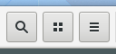

DRAFT
# A Framework for Analyzing Feedback in User Interfaces
## Abstract
When designing interactive systems, providing feedback is crucial to helping users understand them. Comparing the ways in which different interaction patterns give feedback is complex, due to the many variables involved. This can make it difficult to choose the right interaction for a task.
To address this problem, I have developed a framework to categorize individual properties of interactions. This framework can be used to analyze and compare different interactions, enabling designers to choose the most appropriate one for a specific situation and find potential problems with their design. I have documented the framework with examples and applied it to real-world interactions to demonstrate how it can be used to analyze, compare, and improve interfaces.
## Introduction
Every interaction between a human and a machine is *designed* - At some point during the process of building the machine, somebody has to decide which actions it can perform, how they are triggered, what information users get in return, what will happen as a result, and so on.
When making these decisions, there are many factors at play. How do users understand what they can do with the system? How do they know *how* to do it? What will happen when they do it? If they've made a mistake, how can they go back?
All of these factors (and several more), taken together, determine the usability of an interaction. This makes it difficult to compare interactions intuitively, because it requires keeping track of all of these factors.
When designing physical objects there are innate constraints. Weight, cost, materials, and other factors narrow down the number of possible interactions a designer can employ.
With digital interfaces however, designers have almost unlimited freedom in this regard. They can make interfaces behave almost any way they want. Because of the inherent flexibility of the computer as a medium, an interaction in a digital interface can be designed in many different ways, which all provide the same functionality. Since there are so many different variables involved, it is hard to intuitively compare interactions, and thus to decide which is most appropriate.
For example, changing the zoom level on a document might be done by choosing a numeric value, clicking + and - buttons, moving a slider, keyboard shortcuts, pinch-to-zoom, or any number of other interactions. All of these do essentially the same thing, but differ significantly in structure, complexity, and the feedback they provide.
If we had to decide between using buttons or pinch-to-zoom, how could we compare them?
<div class="adjacent-videos">
<video class="video example" src="assets/map-buttons.ogv" width="420" height="480" controls loop muted></video>
<video class="video example" src="assets/map-zoom.mp4" width="300" height="480" controls loop muted></video>
</div>
When comparing different interactions with similar effects like in this case, it can be difficult to stay on top of all the different variables at play—user actions, discoverability, learnability, feedback at different stages, and reversibility. In order to make interactions comparable while considering all these factors, I have developed a framework within which they can be categorized. This makes it easy to analyze and compare individual aspects of interactions in isolation, without losing track of the whole picture. It also clearly highlights where interactions do not provide adequate feedback, thus incetivizing desingers to either add more feedback, or motivate why it is not necessary.
Here are the feedback diagrams for the same two interactions:
<iframe class="diagram-embed w940" src="zoom-buttons.html" width="960" height="480" style="margin-bottom: 0"></iframe>
<iframe class="diagram-embed w940" src="pinch-to-zoom.html" width="960" height="410" style="margin-top: 0"></iframe>
The diagrams make it easy to analyze and compare individual properties of the two interactions: The zoom buttons are highly discoverable and usable with little or no learning upfront. Pinch-to-zoom, on the other hand, is hard to discover if the user doesn't know about it, but it provides real-time feedback during the user interaction, whereas the zoom buttons require the user to click and then wait for the system to respond. Pinch-to-zoom also doesn't provide a preview, but since it does provide user-controlled feedback and inverse-action reversibility, this isn't as important, because the effects of the user's action are instantly visible to them and easily undone.
The structure of the framework enables this kind of comprehensive, detailed comparison between atomic parts of different interactions. This can be use
## Taxonomy
<iframe class="diagram-embed w1320 mt0" src="diagram.html" width="1320" height="500"></iframe>
<div class="adjacent desktop-only">
<p>
This is the structure of the framework, with all the possible properties it can contain. Each box represents a property of the interaction, or lack thereof. The grey boxes (*User Action* and *System Action*) are general properties of an interaction which are present for every action, by definition. The colored blocks represent different types of feedback which can be present or not (red box if it isn't present, one or more green boxes if it is). The transparent boxes structure similar types of feedback in larger categories.
</p>
<div class="diagram-container">
<div class="column">
</div>
<div class="block parent">
<h3>Group</h3>
<div class="block neutral">
<h3>Compulsory property</h3>
</div>
<div class="block">
<h3>Optional property present</h3>
</div>
<div class="block no">
<h3>Optional property not present</h3>
</div>
</div>
</div>
</div>
When applying the framework to a specific action, the diagram is simplified, and only the applicable properties are kept. If an interaction provides a preview, for example, it will contain a green box in the *Before* column, otherwise a red one. In both cases, the description will outline the specifics of the property being present or not.
The framework is organized of four main categories, which correspond to the stages of the interaction timeline. *Environment* describes general properties of the action, which exist independently of it being performed. *Before* describes what information about the effect of the action is available to the user before starting it. *During* describes the feedback users are getting between the start and end of the interaction. *After* describes what information users have after the action is complete, both about what happened and how to go back.
### Environment
<iframe class="diagram-embed w940 mt0" src="compact-env.html" width="940" height="325"></iframe>
The **Environment** describes what the action is, how it is performed, and how it is presented. It is independent of the interaction timeline.
<div class="article-block neutral">
**User Action** is the physical action the user has to perform in order to trigger the action. It has to be present in every case, otherwise there is no way for the user to start the action.
<ul>
Examples:
<li>Touching a certain part of the screen</li>
<li>Pressing a number of keys simultaneously</li>
<li>Speaking a certain phrase into the microphone</li>
</ul>
</div>
<div class="article-block neutral">
**System Action** is the system's response to the user action, the result of the interaction. It also has to be present in every case, because otherwise the action wouldn't do anything.
<ul>
Examples:
<li>The device is locked</li>
<li>An email is sent</li>
<li>Files are deleted</li>
</ul>
</div>
<div class="article-block">
**Action Presentation** is how the action is presented to the user in the interface. This can be hard to pin down as it relies on convention and prior knowledge in many cases. For example, knowing that a text label with a background color is a button and can be clicked is clear to most computer users, but not to someone who has never seen a computer. Similarly, many users know that a file can be saved by pressing `ctrl+s`, even though there are no visible indicators for this in an application, because it is a common command shared across most applications. When determining whether *Action Presentation* is present in an example, use your best judgement as to whether most users will understand what to do.
<figure class="figure">
<video class="example" src="assets/cursor.ogv" autoplay loop muted></video>
<p>The blinking cursor indicates the possibility of text input</p>
</figure>
<figure class="figure">

<p>The border and background gradient identify these elements as buttons, which tells the user that clicking them will yield an effect</p>
</figure>
<figure class="figure">
<video class="example" height="70px" style="max-width: 300px" src="assets/slide-animation.mp4" autoplay loop muted></video>
<p>Label, arrow and animation all tell the user to swipe to the right</p>
</figure>
</div>
### Before
<iframe class="diagram-embed w940 mt0" src="compact-before.html" width="940" height="325"></iframe>
**Before** starting the action, it is important for the user to know what will happen as a consequence of the action. This helps them find the actions they are looking for in an interface, and saves them the surprise of actions that don't do what they thought they would.
<div class="article-block parent">
A **Preview** gives the user information about what will happen, before the action itself starts. A Preview can be symbolic (as in the case of the text on a navigation element) or literal (as in the case of an image thumbnail).
<div class="article-block">
A **Passive Preview** gives the user information about the outcome, without them having to interact with the system. Passive preview elements are either static, and therefore always available, or triggered in some indirect way by the user, for example by not doing anything for a few seconds.
<figure class="figure">
<img class="example" src="assets/buttons-signup.png">
<p>The text on these buttons explains what will happen when they are clicked</p>
</figure>
<figure class="figure">
<img class="example" src="assets/hyperlink.png">
<p>The text label on the hyperlink tells the user where it will lead them</p>
</figure>
<figure class="figure">
<img class="example" src="assets/button-close.png">
<p>The ⨯ icon is widely used to mean "close" in software, so most users will understand it even though there is no explicit text label explaining it</p>
</figure>
</div>
<div class="article-block">
An **Active Preview** gives the user information about the outcome of the action when they interact with the system before starting the action itself. The interaction that triggers the preview must be different from the one that triggers the real action. For example, starting to scroll and then scrolling back immediately wouldn't qualify as a preview, because it is part of the action itself. This is why active previews are often triggered by secondary interactions, such as hover (with a mouse), or long tap (on touch screens).
<div class="figure-container">
<figure class="figure vertical">
<video class="example" height="340px" src="assets/twitter.ogv" controls loop muted></video>
<p>On Twitter, hovering over a user's name shows a hovercard with their bio</p>
</figure>
<figure class="figure vertical">
<video class="example" height="340px" src="assets/youtube.ogv" controls loop muted></video>
<p>When hovering over the timeline on a Youtube video, a thumbnail previews the video at a different timestamp</p>
</figure>
</div>
</div>
</div>
### During
<iframe class="diagram-embed w940 mt0" src="compact-during.html" width="940" height="325"></iframe>
**During** the interaction it is important to give the user information on what is happening. If the action requires continuous input, then this feedback is crucial, because it informs how they proceed with the interaction. If it happens autonomously, then feedback is no less important, because it explains to the user what the system is doing between the initial and final state are related.
There are two main categories: Feedback that tells the user that their input was received (Input Feedback), and feedback that shows the user what is happening as a result of their input (Action Feedback).
<div class="article-block">
**Input Feedback** confirms the user's input, reassuring them that their action was recognized. It doesn't give any information about the status or progress of the action. In some cases, even though the user input was received properly, the action itself doesn't work. For example, clicking a file the user doesn't have permission to open will not open the file, even though this is the correct interaction for opening it.
<figure class="figure">
<video class="example" height="70px" src="assets/siri-transcript.mp4" autoplay loop muted></video>
<p>While talking to Siri, the command is transcribed on the screen in real time, showing the user that they are being heard</p>
</figure>
<figure class="figure">
<video class="example" src="assets/material-button.ogv" autoplay loop muted></video>
<p>The radial reaction on the button confirms that the click was recognized</p>
</figure>
</div>
<div class="article-block parent">
**Action Feedback** informs the user about the current progress of the action or previews its outcome while the action is happening. This progress can either be autonomous, or controlled by continuous user input. Both of these can be used in combination in a single interaction, such as in the case of kinetic scrolling and other physics-based effects.
<div class="article-block parent">
With **User-Controlled** feedback, the progress of the action is driven by continuous user input.
<div class="article-block">
**Direct Manipulation** are actions where the user interacts directly with the element that is being manipulated.
<div class="figure-container">
<figure class="figure vertical">
<video class="example" height="290px" src="assets/inkscape-dm.ogv" controls loop muted></video>
<p>In many graphics applications position, scale, and rotation can all be adjusted by directly manipulating elements</p>
</figure>
<figure class="figure vertical">
<video class="example" height="290px" src="assets/dnd-undo.ogv" controls loop muted></video>
<p>Dragging a file from one file browser window to the other moves it to the folder that is open in the other window</p>
</figure>
</div>
</div>
<div class="article-block">
**Indirect Manipulation** are actions where interaction and effect happen on different objects.
<div class="figure-container">
<figure class="figure vertical">
<video class="example" height="200px" src="assets/font-slider.ogv" controls loop muted></video>
<p>The slider manipulates the size of the type specimen in real time</p>
</figure>
<figure class="figure vertical">
<video class="example" height="200px" src="assets/blur-slider.ogv" controls loop muted></video>
<p>The slider manipulates the blur value for the selected rectangle in real time</p>
</figure>
</div>
</div>
</div>
<div class="article-block">
**Autonomous** feedback is triggered by the user indirectly, and they have no control over its progress. It can be triggered by the start of the interaction, or, in case of a user-controlled interaction, in response to the course the action is taking. The crucial difference to user-controlled feedback is that once it has started it will run its course, and the user cannot influence the direction it is taking until it is finished.
<div class="">
<figure class="figure vertical">
<video class="example" height="210px" src="assets/scroll-animation.ogv" controls loop muted></video>
<p>When clicking on the scrollbar, the page autonomously scrolls to the new position with an animation</p>
</figure>
<figure class="figure vertical">
<video class="example" width="490px" src="assets/reload-progressbar.ogv" controls loop muted></video>
<p>The progress bar gives a sense of what the loading status of the page is</p>
</figure>
</div>
</div>
</div>
<div class="article-block no">
If there is no **No Action Feedback**, that means the user gets no information about the course of the action between the start and end of the action.
<figure class="figure">
<video class="example" height="220px" src="assets/hyperlink-back.ogv" controls loop muted></video>
</figure>
</div>
### After
<iframe class="diagram-embed w940 mt0" src="compact-after.html" width="940" height="325"></iframe>
**After** the interaction, it is important for the user to be able to see what the system did in response to their action. In case the action was a mistake, they need the ability to easily undo the action and return to the previous state.
<div class="article-block">
The **Response** to an action is the effect of the action that is visible to the user. This is often synonymous with the System Action (for example if the action is a type of navigation), but there are also cases where they are quite different, because the response is just a symbolic representation of the real (non-visual) action being performed.
<ul>
Examples:
<li>An application is open after clicking its icon</li>
<li>The device is locked after pressing the power button</li>
<li>A document is printed after giving the command to do so</li>
</div>
<div class="article-block no">
**No response:** Since most actions provide some kind of response, the concept is most easily illustrated with a counterexample: The keyboard command to copy selected text (`ctrl+c`). If there is an active text selection, this shortcut copies the selected text into the clipboard. After the action, there is no visible reaction from the system whatsoever. The only way to know if the clipboard content changed is to paste it somewhere else.
<figure class="figure">
<video class="example" height="240px" src="assets/copy.ogv" controls loop muted></video>
</figure>
</div>
<div class="article-block parent">
**Reversibility** is the possibility to undo an action and return to the previous state. In the context of this framework, it is defined as being able to do this easliy, i.e. with minimal cognitive and physical effort. This means it has to be undoable with a single, relatively simple action.
<div class="article-block">
**Inverse Action** reversibility is when the opposite action produces the opposite effect, making it easy to reverse an action without having to learn a new interaction.
<div class="figure-container">
<figure class="figure vertical">
<video class="example" height="430px" src="assets/medium-sidebar.mp4" controls loop muted></video>
<p>The sidebar in many Android apps can be opened by sliding it in from the left and closed by sliding it back.</p>
</figure>
<figure class="figure vertical">
<video class="example" height="430px" src="assets/dnd-undo.ogv" controls loop muted></video>
<p>Dragging and dropping files to the wrong folder is easily reversible by dragging them back to the original folder</p>
</figure>
</div>
</div>
<div class="article-block">
**Unrelated Action** reversibility is when there is a quick, convenient way to undo the action, but it is not the opposite of the action itself. This means that some additional learning is required, and the process is less direct and intuitive.
<div class="figure-container">
<figure class="figure vertical">
<video class="example" height="180px" src="assets/back.ogv" controls loop muted></video>
<p>After opening a folder, the back button will navigate back to the previous location</p>
</figure>
<figure class="figure vertical">
<video class="example" height="180px" src="assets/delete-undo.ogv" controls loop muted></video>
<p>After deleting files a banner with an undo button appears, making it easy to restore accidentally deleted files</p>
</figure>
</div>
</div>
</div>
<div class="article-block no" style="padding-bottom: 0.7em">
**Not Reversible** actions include both ones that are impossible to undo (e.g. sending an email), and actions that are theoretically reversible, but require a lot of effort or learning to do so (e.g. recovering a file after it was deleted). This is because if reversing the action is as complex as the action itself (or more so), it stops being part of that action and becomes its own action.
</div>
## Examples
I have tried to define the categories to be useful in practice to distinguish different types of actions. This means that not every possible variable is included, and in some cases the categories are not perfect for describing all the nuances of a specific interaction. In these cases, the descriptions of the individual types of feedback can be used to provide additional context. That said, the framework does work very well to describe and compare many of the most common interactions used in real-world software.
In fact, the taxonomy is even applicable to interactions outside the typical realm of screen-based graphical user interfaces. The following examples show the breadth of possible applications.
This example provides feedback at almost every level: The interface explains what to do and how to do it, gives instant, user-controlled feeback during the interaction, and is easily reversible with the inverse action.
<iframe class="diagram-embed w880" src="slide-to-unlock.html" width="880" height="450"></iframe>
Scrolling on a touchscreen is one of the simplest examples of direct manipulation, and it shows how straightforward inverse action reversibility can be. Action presentation is implicitly provided by the fact that the content is cut off at the edge of the screen, which hints at there being more content outside the visible viewport, and that moving the page can unveil it. There is no preview, but in general, direct manipulation requires less external feedback before the action, since it is built into the manipulation itself. For example, an intrinsically reversible action like scrolling doesn't need a preview as much as e.g. a hyperlink, because scrolling a little and then going back can serve as a kind of active preview.
<iframe class="diagram-embed w880" src="scrolling.html" width="880" height="510"></iframe>
On the other side of the spectrum there are interactions with very little feedback. This is very common in keyboard and voice interactions, because these ways of interacting don't allow for things like user-controlled feedback or inverse action reversibility. During voice interactions, where there is uncertainty about whether the computer even understands the spoken command, input feedback is crucial.
<iframe class="diagram-embed w880" src="siri.html" width="880" height="510"></iframe>
As this example shows, a good preview can alleviate the lack of action feedback to some extent. The thumbnail displayed on hover gives the user an idea of what part of the video they'll be skipping to, instead of leaving them in the dark until they've actually clicked (which is what most video players do). Theoretically, this example could probably provide user-controlled feedback through indirect manipulation of the slider, but due to technical reasons (it would require the entire video to be cached up front) it is not practical in this case.
For interactions that can't provide user-controlled action feedback, like mouse clicks or keyboard commands, previews can help the user decide whether this is the action they want to trigger.
<iframe class="diagram-embed w880" src="youtube-seek.html" width="880" height="430"></iframe>
There are also actions with multiple distinct phases, which provide different types of feedback during the different phases. In this example there is an initial "trigger" phase during which the user swipes the list element horizontally. When they release the element, a second "action" phase is initiated. Depending on how far the element was moved, it either snaps back into position or slides out of view, and its slot in the list is closed. This means that even though part of the action provides user-controlled feedback, there is no inverse-action reversibility, since the element is no longer visible. Instead, the app shows a banner with an undo button after the action is complete.
<iframe class="diagram-embed w940" src="swipe-to-clear.html" width="1000" height="500"></iframe>
## Application
The goal of this project is to provide a tool that makes it easier to analyze interactions, compare them, and find potential problems in how they give feedback to the user. To demonstrate the taxonomy's usefulness in this regard, I have used it to analyze a few real-world interaction patterns, highlighting where they succeed, where they fall short, and what could be improved.
### Clicking for Navigation
Links, tabs, menus, and other navigation elements that are clicked or tapped all suffer from the same problem: It is [hard to know](http://www.jonikorpi.com/zoomable-ui-for-the-web) what exactly will happen when you click them, even if they are clearly labelled. This is because the click is an inherently ambiguous interaction. It doesn't have a direction, duration, or other variable that conveys meaning beyond the coordinates of the click.
<figure class="figure center">
<img class="example" src="assets/click-menus.svg">
<p>Will clicking this menu button open a small popover menu or a huge fullscreen menu (or something entirely different)?</p>
</figure>
The simplicity and ubiquity of the click also mean that it is used in so many different contexts and patterns that it is impossible to predict what kind of behavior it will trigger. Unlike the right-click, which almost always opens contextual menus, the left click (or tap on mobile) can do anything, from opening applications to turning off the device. This means that unless the clicked element explains what will happen in great detail, the user is left with a lot of uncertainty.
This problem gets worse when the action doesn't provide sufficient feedback while it is happening. Then the user not only doesn't know what will happen, but they don't even see it happening, which means that they have to compare the new state to their memory of the previous one and find the difference. To make matters worse, inverse action reversibility is impossible (there is no opposite to a click), which means that going back if the result isn't what the user wanted always requires some effort.
The hyperlink is the protypical example for an interaction that involves clicking, and it has all of the problems described above.
<iframe class="diagram-embed w880" src="hyperlink.html" width="880" height="430"></iframe>
The action presentation is probably sufficient for most users, but the preview could definitely be better. Since the action has no built-in reversibility and preview through something like direct manipulation, providing a comprehensive preview is crucial in helping users decide whether they want to start the action or not. In this case, a way to improving the preview (at least on the desktop) could be to provide an active preview when the user hovers the link, i.e. displaying additional information about the navigation target in a small overlay.
<figure class="figure center">
<video class="video example" src="assets/twitter.ogv" style="width: 100%; height: 325px;" controls loop muted></video>
<p>A hovercard on Twitter previewing a user profile</p>
</figure>
Input feedback is provided by the physical input device and web browser natively in this case. The mouse provides haptic feedback, and the link color changes to red while it is being clicked.
There is no action feedback during the action, it instantly switches from start to end state. Adding autonomous feedback (e.g. an animated transition) would be definitely possible in this case, though a native implementation of this on the web is still [work in progress](http://chrislord.net/index.php/2015/04/24/web-navigation-transitions).
<figure class="figure center" style="width: 520px">
<video class="video example" src="assets/link-animation.ogv" style="width: 100%; height: 325px;" controls loop muted></video>
<p>An example of a semantic animation explaining the state change and relationship between states</p>
</figure>
Adding user-controlled feedback to something like a hyperlink would be difficult without changing the interaction significantly. There are, however, examples of it being used effectively for navigation of hierarchical structures.
<figure class="figure center" style="width: 280px">
<video class="video example" src="assets/facebook-paper.mp4" style="width: 100%; height: 420px;" controls loop muted></video>
<p>In Facebook Paper, posts are cards which can be opened by swiping up or tapping, and closed by swiping down.</p>
</figure>
As for reversibility, the browser's back button is not ideal, but at least it is a consistent interaction which works on all websites. This makes up for some of the non-intuitiveness of having to perform an action completely different from the previous one in order to undo its effects.
### CTRL+C Copying
Like most keyboard commands, this example provides no feedback before or during the action. However, it is particular in that it doesn't even have visible effects, and reversibility is completely impossible, because the previous clipboard content is overwritten with no way to get it back.
<iframe class="diagram-embed w1100" src="ctrl+c.html" width="1100" height="410"></iframe>
Since it is a keyboard command, it is forgivable that there are no action presentation and preview, as that would require graphical elements on the screen, at which point it might as well be a button. Keyboard shortcuts are an optional feature for power users, and as such it is acceptable that they require some learning. A good system for discovering and looking up shortcuts (e.g. [GNOME's shortcut window](https://blogs.gnome.org/aday/2015/12/14/shortcuts-love)) at the OS- or application level is of course important, but that is a much broader issue.
When it comes to feedback during the interaction though, there is no such excuse. Providing input feedback could be as simple as adding a sound, or a light visual cue, such as a brief change in background color on the copied text. Action feedback would be more complicated, because it would require a visual representation of the clipboard somewhere in the system, e.g. a built-in [clipboard manager](http://www.makeuseof.com/tag/6-tools-manage-linux-clipboard).
<figure class="figure center" style="width: 400px">
<img class="example original" src="assets/clipboard-indicator.png">
<p>The [*Clipboard Indicator* GNOME Shell extension](https://extensions.gnome.org/extension/779/clipboard-indicator) keeps a history of recent clipboard entries, thus making it possible to go back to previously copied snippets</p>
</figure>
With a visual representation of the clipboard at the operating system level, it would be possible move the copied text from its origin to the clipboard with an animation. This would explain the process at a glance. It could even enable copying by direct manipulation, i.e. by dragging the selected text to the clipboard area.
<figure class="figure center" style="width: 448px">
<video class="video example" src="assets/copy-animation.ogv" style="width: 100%; height: 240px;" controls loop muted></video>
<p>Tentative redesign with autonomous action feedback. The animation conveys that the text is being copied and shows where it is going.</p>
</figure>
The same is true for response: A visual clipboard would make the effect of the action explicit, as the copied text would be visible without having to be pasted. And even though this idea would not make reversibility very easy, it would at least mean that it's impossible to lose data when accidentally overwiting of the clipboard. This could eliminate a possible source of frustration for users.
## Future Work
Though the framework is quite general and applicable to a wide range of interactions, there are some parts of it which I believe should be explored further. I have investigated some of them, but decided that they would ultimately go beyond the scope of this project, which was primarily focused on feedback, and become a more general-purpose framework for analyzing all aspects of interactions.
One such area is the power and complexity of user and system actions. Considering the possibile number of inputs and outputs that different actions produce (for example, pressing a button has one possible outcome, moving a slider can have thousands), there should be a way to systematically distinguish between different levels of complexity. This could, for example, take the form of additional subcategories in the *Environment* column.
Another idea I have not explored in detail yet is the cognitive and physical effort that different actions require. Some types of actions, especially direct manipulation, provide a lot of feedback, which makes them easy to grasp, but also require very precise input, which can make them inefficient in the long run. Once the user is intimately familiar with an action, direct manipulation is often no longer be the best way to perform it, because they have learned a more convenient shortcut. For example, dragging an element into the trash can to delete it requires significantly more effort than clicking a "delete" icon and clicking it, and a lot more effort than pressing the "delete" key on the keyboard.
The availability of certain input methods (e.g. mouse, touchscreen, physical keyboard) is likely an important factor in determining how much effort something requires, and needs to be investigated further.
Identifying different types of effort and finding ways to categorize and quantify them could provide an even more complete picture of interactions than the current framework does.
## Conclusion
I have developed a comprehensive framework to categorize and compare feedback in user interfaces. I have then applied the framework to real-world examples and shown how to use it to analyze interactions in detail, find problems in how they provide feedback, and make suggestions for improving it.
...